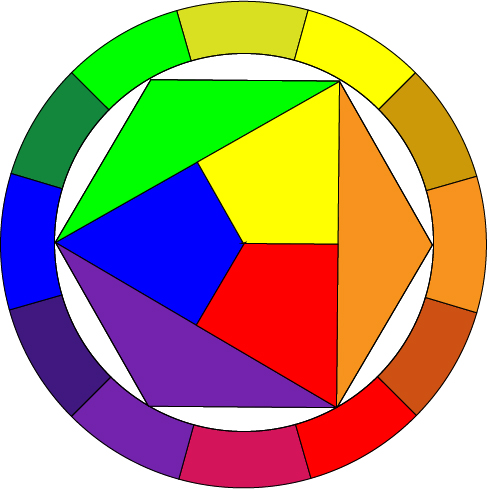
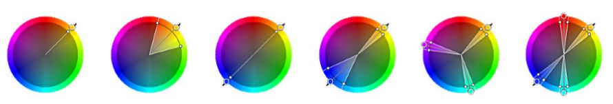

Farver
Farvehjulets opbygning
Primære
Til at starte med at vi de Primære farver, som er de tre farver der er i midten. Det er de tre farver der er de rene farver som betyder at de er ikke bleven blandet med andre farver.
Sekundære
Hvis man så blander to primære farver for man sekundære farver altså
Blå+Rød=Lilla
Blå+Gul=Grøn
Gul+Rød=Orange
Tertiære
Tertiære farver for man når man så tager en primær farve og blander med en sekundære farve. Det betyder at man få en anden nuance.
De farver der står overfor hinanden, betegnes som komplementære og derfor kan skabe en optisk kontrast.
Farverum
Når man skal lave enten en hjemmeside eller en reklame som skal trykkes skal man tænke over hvilken Farverum man bruger.
RGB som er en forkortelse af Red Green Blue som er et Additivt farvesystem, som man bruger på computer og tv-skærme, da der bliver tilsat lys.
CMYK som er en forkortelse af Cyan Magenta Yellow Key, som er et Subtraktivt farvesystem, som man bruger til tryksager. Derfor bliver lystet trukket ud.
Farvesammensætning
Der findes seks forskellige farvesammensætninger:

Monokrom som er en kulør der kan justeres i forhold til lyshed og mætning.
Analog er en kulør ligesom monokrom men hvor der er et bredere spektrum af lyshed og mætning.
Komplementær som er de farver der ligger over for hinanden og det kan skabe en optisk kontrast.
Split komplementær
Triader er de farver der ligger lige langt fra hinanden.
Tetriader som også er en dobbeltkomplementære, det vil siges at det er fire farver som er komplementære
Kilder: PDF Farvelære